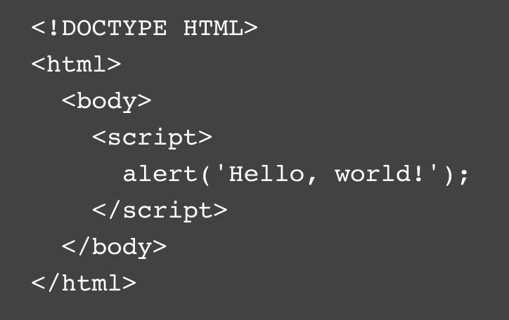

History
Test programs have always existed in software development, but the tradition of using "Hello, World!" as a test message was influenced by an example program in the 1978 book The C Programming Language. The example was taken from a 1974 Bell Laboratories internal memorandum by Brian Kernighan, one of the co-creators of the Unix operating system.
Example
Here is a JavaScript example:
